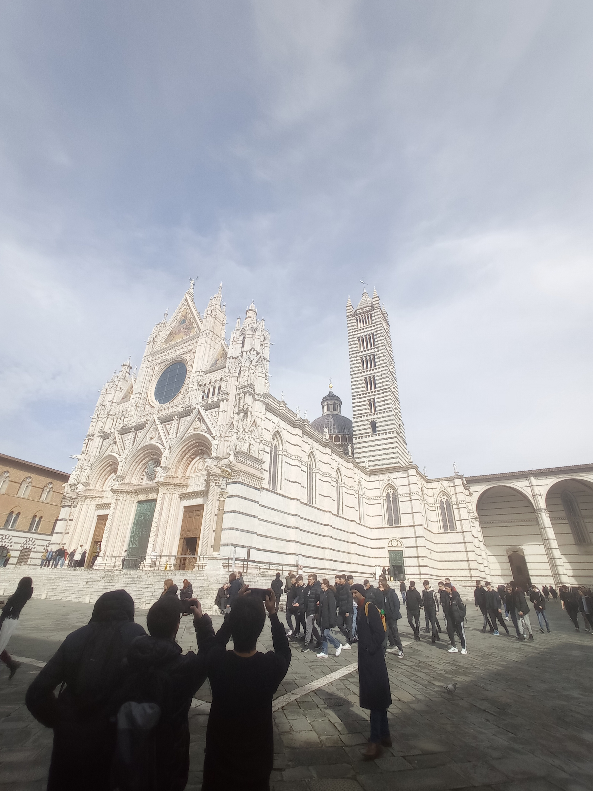
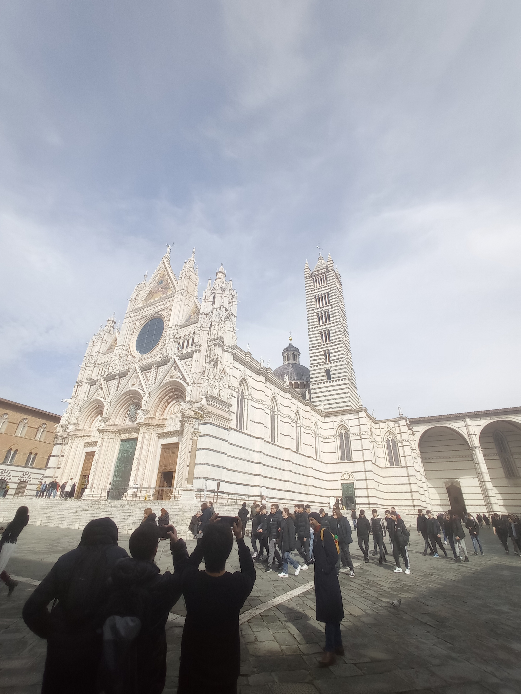

Il terzo giorno inizia con una mattinata a Siena, dove come prima tappa abbiamo visitato i giardini pubblici della grande Fortezza Medicea.

Successivamente ci siamo recati presso la Basilica Cateriniana di San Domenico, cattedrale gotica con cappella affrescata che custodisce le reliquie e la testa di Santa Caterina.
Alcune foto dei bellissimi vicoli di Siena.


Dopo aver visitato la Basilica, ci siamo ritrovati di fronte a Palazzo Salimbeni, un palazzo neogotico risalente al XIV secolo, situato in Piazza Salimbeni con una statua.
Proseguendo siamo arrivati davanti alla Chiesa di San Cristoforo, che noi abbiamo potuto vedere solo dall'esterno.

 
Dopo aver percorso le vie principali del paese, siamo arrivati alla cattedrale più grande di Siena: il Duomo, edificio del XIII secolo noto per la sua splendida facciata e le sue celebri fasce di marmo bianche e nere.
Come ultima tappa del mattino concludiamo con Piazza del Campo, dominata dalla Torre del Mangia, è una piazza medievale lastricata in mattoni, circondata da eleganti edifici e famosa per ospitare il Palio.